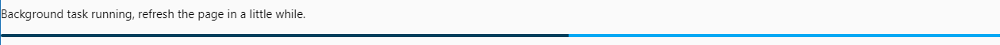
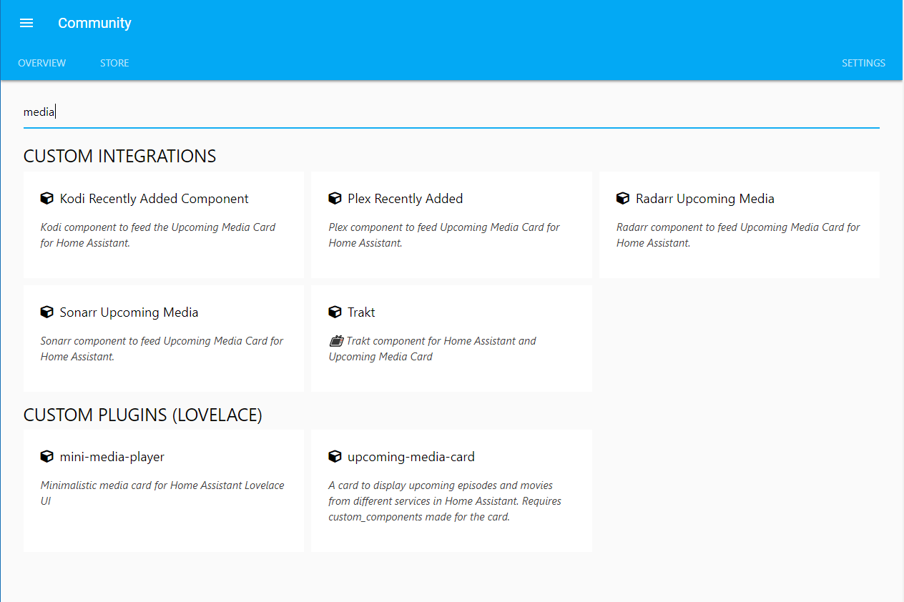

HOME | INSTALLATION | CONFIGURATION | TOKEN | FAQ
HACS (Home Assistant Community Store)

What can HACS do?
This is a manager for your custom integration (components) and plugin (lovelace elements) needs.
It can help you download and update elements.
It can also help you discover new awesome stuff.
Updates
Installed elements
HACS will check for updates to installed elements:
- At startup.
- Every 30 minutes after HA startup.
Everything else
HACS will check for updates to every element:
- At startup
- Every 500 minutes after HA startup.
Manually trigger updates
You can also force a check by clicking the "RELOAD DATA" button under the "SETTINGS" tab (This will force a reload of everything.)
Under the "SETTINGS" tab there is also a reload icon to the left of every custom repository you have added, clicking that will reload info for it.
On each RepositoryView (the page with details about the element) there is a reload icon at the top-right corner, clicking that will reload it.
Logs
Like any other integration this logs to the home-assistant.log file.
You can also click the "OPEN LOG" from the "SETTINGS" tab to show logs only related to this integration (useful when creating a issue)
Startup
During the startup it will scan for know repositories, and there will be a progressbar indicating that it's working.

This is completely normal, and you can still use it while it's working. The same indication will show when a scheduled task is running.
Existing elements
This will not scan you local file system for existing elements.
Why?
Trust. If this did not download it, there'd be no way to know which version you have, so for elements you already have you will still need to click the "INSTALL" button for that element.
Data
All data it handles are saved to the hacs file that is located under .storage
Sensor
During the setup HACS will add a new sensor to your installation (sensor.hacs).
This will have the number of pending updates as the state.

Settings
This section is for the settings tab.
Add custom repos
By default all elements that meet the requirements from these orgs are automatically added:
Developers can also add their repositories to be included by default
But you can add any other repository that meets the requirements, to do so go to the "SETTINGS" tab.

Add the url to the repository under "CUSTOM REPOSITORIES" and select a type before clicking the "save icon".
After adding a repository the repository will be scanned, if it can be tracked the element will show up under "STORE", and you will be redirected to that element.
Want to get inspiration on what to add? Check out the Awesome Home Assistant list it contains links to many custom_components (integrations) and custom_cards (plugins).
If you have added a repository manually and that repository is subsequently added to the 'store' then that will be removed from the custom repository list.
Note for developers
For your repository to be added there are a few criteria that need to be met.
See here for how to add a custom repository.
The description of each element is gathered from it's repository.
The version it shows/uses is gathered from the tag name of the latest release.
If you want to add a richer experience for your users you can add an info.md file to the root of your repository (this is optional), this file will be rendered under the repository description, it does not support the full styling options as Github so use with care.
Include default repositories
As a developer you can now add your repository to be included in as a default repository in the store.
Before you try to add your repository to the default store first make sure that it follows the requirements for that type that are listed below.
Only the owner of the repository or a major contributor to it can submit a PR to have it included as a default.
When all of this is covered, you can add it to DEFAULT_REPOSITORIES at the bottom of the const.py file
When a PR for this is merged, it will be a part of the next planned minor release (0.X.0), if no release is planed a release will be created about a week after the first addition.
Examples:
Note for integration developers
For an integration repository to be valid these are the criteria:
- The repository uses GitHub releases (Optional)
- If there are releases:
- When installing/upgrading it will scan the content in the latest release.
- If there are no releases:
- It will scan files in the branch marked as default.
- There is only one integration (one directory under
ROOT_OF_THE_REPO/custom_components/) pr. repository (if you have more, only the first one will be managed.) - The integration (all the python files for it) are located under
ROOT_OF_THE_REPO/custom_components/INTEGRATION_NAME/ - There is only one integration (one directory under
ROOT_OF_THE_REPO/custom_components/) per repository (if you have more, only the first one will be managed.) -
The integration and all the python files for it are located under
ROOT_OF_THE_REPO/custom_components/INTEGRATION_NAME/ -
In that integration directory, there is a
manifest.jsonfile.
A good template to use as a reference is blueprint
Note for plugin developers
For an integration repository to be valid these are the criteria:
- The repository uses GitHub releases (Optional)
- If there are releases:
- When installing/upgrading it will scan the content in the latest release.
-
If there are no releases:
- It will scan files in the branch marked as default.
-
There are
.jsfiles underROOT_OF_THE_REPO/dist/or directly in the root of the repository. - One of the
.jsfiles have the same name as the repository. - With every rule there is an exception, if the repository's name starts with
"lovelace-", there can be a.jsfile in the repository matching the repository name with"lovelace-"striped from the name, example:- Accepted:
- repository name: "lovelace-awesome-card"
- file name of one of the files "awesome-card.js"
It will first check the dist directory, if nothing is there it will check the root directory. All .js files it finds will be downloaded.
A good template to use as a reference is boilerplate-card
Contribute
This integration is massive and there are a lot of areas to contribute to.
Contributions to the docs, will almost be blindly accepted.
For contributions to the integration itself (backend/frontend)
If the contribution is minor, make the change and open a PR (Pull Request).
For new features, changes to existing features, or other big changes, please open an RFC (Request for comment) issue before you start the work.
Image "gallery"
Overview

Store

Settings

Example integration
Example plugin
Last notes from the initial developer
First startup after installation will take some time, but it's worth it.
This was developed under the influence of üç∫, a lot of üç∫, if you want to support my work feel free to buy me a ‚òïÔ∏è (most likely üç∫)
How it works and what it does are added based on a single persons mindset, you may not agree with what I have done, if you have a suggestion please open an RFC.
Why do frontend like this and not use JavaScript in a panel_custom?
I tried, believe me I tried. I really wanted to go that route, but after many, many hours of failing I gave up.
Bugs / issues / suggestions
If you find bugs/issues or have any suggestions please open an issue in the HACS Repository